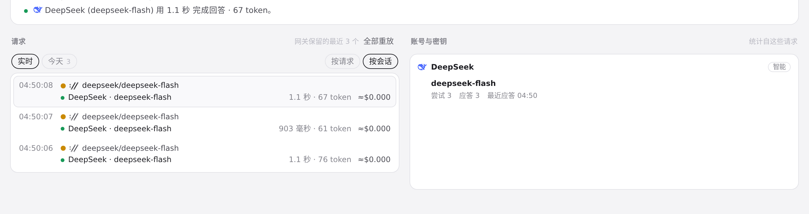
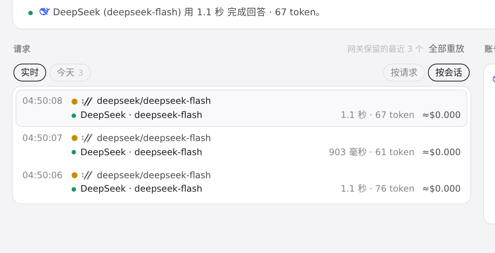
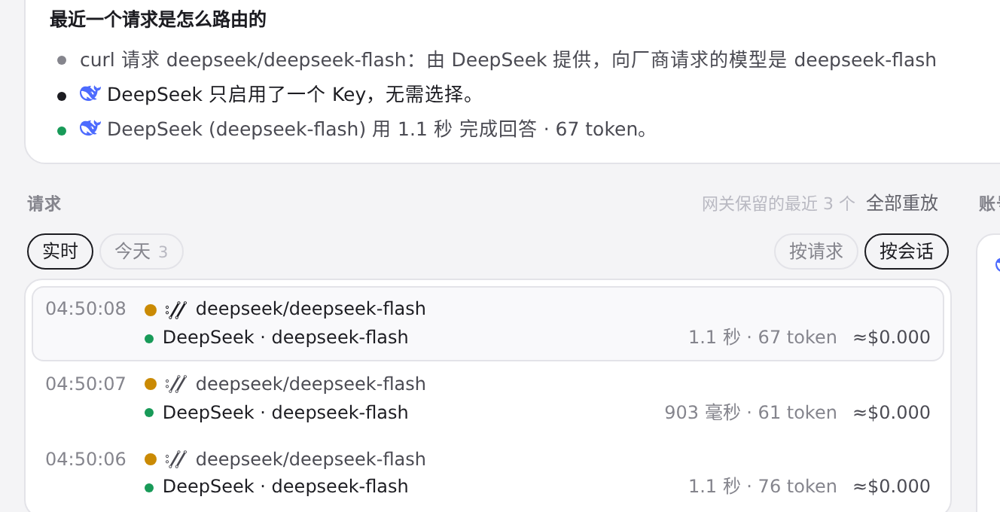

#859 界面预览
commit c4bfd57 · 回到 PR · 路由页按会话分组时，Codex 的 ambient_suggestions / ambient_suggestion_safety 调用组成的、且没有会话标题的会话组，现在回退显示新文案「后台提示词建议」，并把该用途说明（kindWhy）加进标题属性；同时补了 zh-CN、ja、de 的译文。
红线是鼠标走过的轨迹，红色圆环是一次点击；底部文字是这一步在做什么。空格暂停，← → 逐段查看。
 路由页：按会话分组后的会话名 · 按会话分组后的路由列表与会话组行
路由页：按会话分组后的会话名 · 按会话分组后的路由列表与会话组行

路由页：按会话分组后的会话名 · 切换到「按会话」后的请求列表

路由页：按会话分组后的会话名 · 切到「按会话」后的请求列表：沙盒里的调用都没有会话标识，这里没有出现会话组名称行

路由页：按会话分组后的会话名 · 分组切换所在的位置：按会话分组后，会话组名称与悬停提示显示在这一列里